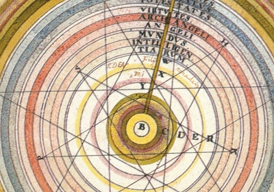

Sacred Texts Astrology
Buy this Book at Amazon.com
|  | The Hindu Book of Astrologyby Bhakti Seva[1902] |
If this was really a vintage Hindu Astrology book, it would be a real find. I have yet to locate one, and there has been a steady drip of requests for Hindu Astrology since the inception of the site, which I would be more than happy to satisfy. Rather this is a short book similar to the Yogi Publication Society books, published by William Atkinson under a series of pseudonyms. Note: this is the only book by anyone named 'Bhakti Seva' in the WorldCat catalog, and there is no additional information on him (or her, given the subtle feminist hints in the text).
At the cusp of the 20th century, some occult publishers were more than willing to bend the truth in the interest of satisfying a popular demand for information on the 'Mysterious East.' It was not illegal to impersonate a Swami through the mails. The publisher in this case took a dash of New Thought, an amount of mystic flim-flam, and used it to season a mail-order pamphlet on the new 'simplified' Astrology, repackaged as 'Hindu Astrology.' And, judging by the small-print testimonials in the back of the book, he found a willing audience.
He makes a hash of Hinduism in the process; such as his very Western statement that "We Are All Masters of Our Own Fate." (p. 12). Most Hindus believe that our burden of Karma, which is accumulated over many rebirths, plays a much larger role than our individual self-will. At the very end of the book he says (p. 104) "We are continually going forward, onward and upward. Nothing stands still! There is no backward movement!" This is a modern Westernized view of progress, counter to the traditional Hindu view of cyclical time, with each age in the cycle being less advanced than the previous.
Please don't be deceived. Hindu Astrology is a difficult art and divides the heavens into dozens of 'Asterisms,' not just twelve. Hindu astrologers are, even today, consulted at important life passages, particularly marriage, and their horoscopes and the interpretation thereof take great skill and knowledge to create. Rather this is documentation that not just William Atkinson was up to the Swami game, and serves as an illustration of the state of occult publishing in 1902.--J. B. Hare, March 25th, 2009.